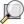
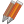

Docs for ‘QGIS testing’. Visit http://docs.qgis.org/2.14 for QGIS 2.14 docs and translations.
General Tools¶
- Keyboard shortcuts
- Context help
- Panels
- Rendering
- Color Selector
- Blending Modes
- Zooming and Panning
- Measuring
- Select and deselect features
- Data defined override setup
- Identify features
- Annotation Tools
- Spatial Bookmarks
- Nesting Projects
- Decorations
- Authentication
- Save layer into file
- Use of variables for dynamic content
Keyboard shortcuts¶
QGIS provides default keyboard shortcuts for many features. You can find them in section Menu Bar. Additionally, the menu option Settings ‣ Configure Shortcuts... allows you to change the default keyboard shortcuts and add new keyboard shortcuts to QGIS features.
Figure Shortcuts 1:

Define shortcut options
Configuration is very simple. Just select a feature from the list and click on :
- [Change] and press the new combination you want to assign as new shortcut
- [Set none] to clear any assigned shortcut
- or [Set default] to backup the shortcut to its original and default value.
Once you have finished your configuration, you can save it as an XML file and load it to another QGIS installation.
Context help¶
When you need help on a specific topic, you can access context help via the [Help] button available in most dialogs — please note that third-party plugins can point to dedicated web pages.
Panels¶
Layers Panel¶
The layers panel lists all the layers in the project. The checkbox in each legend entry can be used to show or hide the layer. The toolbar in the layers panel allows you to:
- Add new group
 Manage Visibility: control visibility of layers and
preset layers combination
Manage Visibility: control visibility of layers and
preset layers combination- Filter Legend by Map Content: only the layers that are set visible and whose features intersect the current map canvas have their style rendered in the layers panel. Otherwise, a generic NULL symbol is applied to the layer. Based on the layer symbology, this is a convenient way to identify which kind of features from which layers cover your area of interest.
- Filter Legend by Expression: helps you apply an expression to remove from the selected layer tree styles that have no feature satisfying the condition. This can be used for example to highlight features that are within a given area/feature of another layer. From the drop-down list, you can edit and clear the expression set.
- Expand All or Collapse All layers and groups in the layers panel.
- and
 Remove Layer/Group currently selected.
Remove Layer/Group currently selected.
{kind=link}
{kind=link}
{kind=link}
{kind=link}
{kind=link}
Figure Layer tools Bar:
Layer Toolbar in Layers Panel
The button allows you to add Presets views in the legend.
Presets are a way to save and easily restore a combination of layers with their
current style. To add a preset view, just set visible the layers you want, with
their desired symbology, and click on button.
Choose Add Preset... from the drop-down menu and give a name to the preset.
The added preset is listed at the bottom of the drop-down menu and is recalled by
clicking on it.
The Replace Preset ‣ option helps you overwrite a preset content with the current map view while the Remove Current Preset button deletes the active preset.
All the added presets are also present in the map composer in order to allow you to create a map layout based on your specific views (see Main properties).
Note
Tools to manage the layers panel are also available to layout the map and legend items of the print composer
A layer can be selected and dragged up or down in the legend to change the Z-ordering. Z-ordering means that layers listed nearer the top of the legend are drawn over layers listed lower down in the legend.
Note
This behavior can be overridden by the Layer Order panel.
Layers in the legend window can be organized into groups. There are two ways to do this:
- Press the
 icon to add a new group. Type in a name for
the group and press Enter. Now click on an existing layer and
drag it onto the group.
icon to add a new group. Type in a name for
the group and press Enter. Now click on an existing layer and
drag it onto the group. - Select some layers, right click in the legend window and choose Group Selected. The selected layers will automatically be placed in a new group.
To bring a layer out of a group, you can drag it out, or right click on it and choose Make to toplevel item. Groups can also be nested inside other groups.
The checkbox for a group will show or hide all the layers in the group with one click.
The content of the right mouse button context menu depends on whether the
selected legend item is a raster or a vector layer. For GRASS vector layers,
 Toggle editing is not available. See section
Digitizing and editing a GRASS vector layer for information on editing GRASS vector layers.
Toggle editing is not available. See section
Digitizing and editing a GRASS vector layer for information on editing GRASS vector layers.
Below are listed available options in context menu depending on the selected item.
| Option | Vector Layer | Raster Layer | Group |
|---|---|---|---|
|  Zoom to Layer/Group |  |
|
|
 Show in Overview Show in Overview |
|
|
|
 Zoom to Native Resolution (100%) Zoom to Native Resolution (100%) |
|
||
| Stretch Using Current Extent | |
||
| Remove |
|
|
|
 Duplicate Duplicate |
|
|
|
| Set Layer Scale Visibility | |
|
|
| Set Layer/Group CRS | |
|
|
| Set Project CRS from Layer | |
|
|
| Styles ‣ | |
|
|
| Copy Style | |
|
|
| Paste Style | |
|
|
| Open Attribute Table | |
||
| Toggle Editing |
|
||
|  Current Edits ‣ |
(in Edit mode) |
||
| Save As... | |
|
|
| Save As Layer Definition File... | |
|
|
| Filter | |
||
| Show Feature Count |
|
||
| Properties | |
|
|
| Move to Top-level | |
|
|
| Rename | |
|
|
| Group Selected | |
|
|
| Properties | |
|
|
| Set Group WMS Data | |
||
| Mutually Exclusive Group |
|
||
| Add Group | |
{kind=link}
{kind=link}
{kind=link}
Enabling the Mutually Exclusive Group option you can make a group have only one layer visible at the same time. Whenever a layer within the group is set visible the others will be toggled not visible.
It is possible to select more than one layer or group at the same time by holding down the Ctrl key while selecting the layers with the left mouse button. You can then move all selected layers to a new group at the same time.
You may also delete more than one layer or group at once by selecting several items with the Ctrl key and pressing Ctrl+D afterwards. This way, all selected layers or groups will be removed from the layers list.
Editing vector layer style¶
From the Layers panel, you have shortcuts to easily and quickly edit the layer rendering. Right-click on a vector layer and select Styles –> in the list in order to:
- see the currently applied styles to the layer. In case you defined many styles for the layer, you can switch from one to another and have your layer rendering automatically updated in the map canvas.
- copy the current style, and when applicable, paste a copied style from another layer
- rename the current style, add a new one (which is actually a copy of the current one) or delete the current style (when multiple styles available).
Note
The previous options are also available for raster layer.
Whether the features in the vector layer have all the same unique symbol or they are classified (in that case, the layer is displayed in a tree structure with each class as sub-item), the following options are available at layer level or class level:
- a Edit Symbol... button to open the The symbol Selector dialog and update any property (symbol, size, color...) of the layer or feature symbol. Double-clicking on a feature does also open the Symbol Selector dialog.
- a Color Selector widget with a Color Wheel from which you can click a color and have it automatically update the symbol fill color. For convenience, Recent colors are available at the bottom of the color wheel.
- a Show All Items and Hide All Items to toggle on or off the visibility of all the classes of features. This avoids (un)checking items one by one.
{kind=link}
{kind=link}
Tip
Quickly share a layer style
From the context menu, copy the style of a layer and paste it to a group or a selection of layers: the style is applied to all the layers that are of the same type (vector vs raster) as the original layer and, in case of vector, have the same geometry type (point, line or polygon).
Working with the Legend independent layer order¶
There is a panel that allows you to define an independent drawing order for
the layers panel. You can activate it in the menu
Settings ‣ Panels ‣ Layer Order Panel. This feature allows you
to, for instance, order your layers in order of importance, but still display
them in the correct order (see figure_layer_order). Checking the
Control rendering order box underneath the list of layers will
cause a revert to default behavior.
Figure Layer Order:
Define a legend independent layer order
Statistical Summary Panel¶
This panel can show some statistics on a specific vector layers. The panel allows users to choose:
- the vector layer;
- the column or the expression;
- filter statistics to selected features;
- refresh the informations;
- the statistics information to display with the bottom right button.
Note
The list of shown statistics depends on the type of the values (numeric, string or date) returned by the selected field or the entered expression.
QGIS Overview Panel¶
In QGIS, you can use an overview panel that provides a full extent view of layers added to it. Within the view is a rectangle showing the current map extent. This allows you to quickly determine which area of the map you are currently viewing. Note that labels are not rendered to the map overview even if the layers in the map overview have been set up for labelling. If you click and drag the red rectangle in the overview that shows your current extent, the main map view will update accordingly.
Log Messages Panel¶
When loading or processing some operations, you can track and follow messages that appear in different tabs using the Log Messages Panel. It can be activated using the most right icon in the bottom status bar.
{kind=link}
Undo/Redo Panel¶
For each layer being edited, this panel shows the list of actions done, allowing to quickly undo a set of actions by simply selecting the action listed above.
Rendering¶
By default, QGIS renders all visible layers whenever the map canvas is refreshed. The events that trigger a refresh of the map canvas include:
- Adding a layer
- Panning or zooming
- Resizing the QGIS window
- Changing the visibility of a layer or layers
QGIS allows you to control the rendering process in a number of ways.
Scale Dependent Rendering¶
Scale-dependent rendering allows you to specify the minimum and maximum scales
at which a layer will be visible. To set scale-dependent rendering, open the
Properties dialog by double-clicking on the layer in the legend. On
the General tab, click on the Scale
dependent visibility checkbox to activate the feature, then set the minimum and
maximum scale values.
You can determine the scale values by first zooming to the level you want to use and noting the scale value in the QGIS status bar.
Controlling Map Rendering¶
Map rendering can be controlled in various ways, as described below.
Suspending Rendering¶
To suspend rendering, click the Render checkbox in the
lower right corner of the status bar. When the Render
checkbox is not checked, QGIS does not redraw the canvas in response to any of
the events described in section Rendering. Examples of when you
might want to suspend rendering include:
- Adding many layers and symbolizing them prior to drawing
- Adding one or more large layers and setting scale dependency before drawing
- Adding one or more large layers and zooming to a specific view before drawing
- Any combination of the above
Checking the Render checkbox enables rendering and
causes an immediate refresh of the map canvas.
Setting Layer Add Option¶
You can set an option to always load new layers without drawing them. This
means the layer will be added to the map, but its visibility checkbox in the
legend will be unchecked by default. To set this option, choose menu option
Settings ‣ Options and click on the Rendering
tab. Uncheck the By default new layers added to the map
should be displayed checkbox. Any layer subsequently added to the map will be off
(invisible) by default.
Stopping Rendering¶
To stop the map drawing, press the ESC key. This will halt the refresh of the map canvas and leave the map partially drawn. It may take a bit of time between pressing ESC and the time the map drawing is halted.
Note
It is currently not possible to stop rendering — this was disabled in the Qt4 port because of User Interface (UI) problems and crashes.
Influence Rendering Quality¶
QGIS has an option to influence the rendering quality of the map. Choose menu
option Settings ‣ Options, click on the Rendering
tab and select or deselect Make lines appear less jagged
at the expense of some drawing performance.
Speed-up rendering¶
There are some settings that allow you to improve rendering speed. Open the QGIS options dialog using Settings ‣ Options, go to the Rendering tab and select or deselect the following checkboxes:
- Use render caching where possible to speed up redraws
- Render layers in parallel using many CPU cores and then
set the Max cores to use.
- The map renders in the background onto a separate image and each
Map Update interval, the content from this
(off-screen) image will be taken to update the visible screen representation.
However, if rendering finishes faster than this duration, it will be shown
instantaneously.
- With Enable Feature simplification by default for newly
added layers, you simplify features’ geometry (less nodes) and as a result,
they quickly display.
Be aware that you can also face rendering inconsistencies.
Color Selector¶
The select color dialog will appear whenever you push
the  icon to choose a color. The features of this dialog
depends on the state of the Use native color chooser dialogs parameter
checkbox in Settings ‣ Options ‣ General menu.
When checked, the color dialog used is the one of the OS being used. Otherwise,
QGIS custom color chooser is used.
icon to choose a color. The features of this dialog
depends on the state of the Use native color chooser dialogs parameter
checkbox in Settings ‣ Options ‣ General menu.
When checked, the color dialog used is the one of the OS being used. Otherwise,
QGIS custom color chooser is used.
This dialog has four different tabs which allow you to select colors by
 color ramp,
color ramp,  color wheel,
color wheel,
 color swatches or
color swatches or  color picker
(not available under
color picker
(not available under  ).
).
Whatever method you use, the selected color is always described through color sliders for HSV (Hue, Saturation, Value) and RGB (Red, Green, Blue) values. There is also an opacity slider to set transparency level. On the lower left part of the dialog you can see a comparison between the current and the new color you are presently selecting and on the lower right part you have the option to add the color you just tweaked into a color slot button.
Figure color selector 1:

Color selector ramp tab
Tip
Dynamically change the color with the live-updating option
Check the Use live-updating color chooser dialogs option in the General Settings to have the color applied to your items as you change color parameters in the QGIS custom color chooser dialog.
With color ramp or with color wheel,
you can browse to all possible color combinations.
There are other possibilities though. By using color swatches
you can choose from a preselected list. This selected list is
populated with one of three methods:
- Recent colors,
- Standard colors, a user-defined list of colors set under Settings ‣ Options ‣ Colors menu
- or Project colors, a user-defined list of colors set under Project ‣ Project Properties ‣ Default Styles.
Figure color selector 2:

Color selector switcher tab
Another option is to use the color picker which allows
you to sample a color from under your mouse pointer at any part of
QGIS or even from another application by pressing the space bar. Please note
that the color picker is OS dependent and is currently not supported by OSX.
Tip
quick color picker + copy/paste colors
You can quickly choose from Recent colors, from Standard colors
or simply copy or paste a color by clicking
the drop-down arrow that follows the color box.
Figure color selector 3:

Quick color selector menu
Blending Modes¶
QGIS offers different options for special rendering effects with these tools that you may previously only know from graphics programs. Blending modes can be applied on layers, on features but also on print composer items:
- Normal: This is the standard blend mode, which uses the alpha channel of the top pixel to blend with the pixel beneath it. The colors aren’t mixed.
- Lighten: This selects the maximum of each component from the foreground and background pixels. Be aware that the results tend to be jagged and harsh.
- Screen: Light pixels from the source are painted over the destination, while dark pixels are not. This mode is most useful for mixing the texture of one item with another item (e.g., you can use a hillshade to texture another layer).
- Dodge: Dodge will brighten and saturate underlying pixels based on the lightness of the top pixel. So, brighter top pixels cause the saturation and brightness of the underlying pixels to increase. This works best if the top pixels aren’t too bright; otherwise the effect is too extreme.
- Addition: This blend mode simply adds pixel values of one item with the other. In case of values above one (in the case of RGB), white is displayed. This mode is suitable for highlighting features.
- Darken: This creates a resultant pixel that retains the smallest components of the foreground and background pixels. Like lighten, the results tend to be jagged and harsh.
- Multiply: Here, the numbers for each pixel of the top item are multiplied with the corresponding pixels for the bottom item. The results are darker pictures.
- Burn: Darker colors in the top item cause the underlying items to darken. Burn can be used to tweak and colorise underlying layers.
- Overlay: This mode combines the multiply and screen blending modes. In the resulting picture, light parts become lighter and dark parts become darker.
- Soft light: This is very similar to overlay, but instead of using multiply/screen it uses color burn/dodge. This is supposed to emulate shining a soft light onto an image.
- Hard light: Hard light is also very similar to the overlay mode. It’s supposed to emulate projecting a very intense light onto an image.
- Difference: Difference subtracts the top pixel from the bottom pixel, or the other way around, to always get a positive value. Blending with black produces no change, as the difference with all colors is zero.
- Subtract: This blend mode simply subtracts pixel values of one item from the other. In case of negative values, black is displayed.
Zooming and Panning¶
QGIS provides tools to zoom and pan to your area of interest.
Apart from using the  pan and
pan and  zoom-in /
zoom-in /  zoom-out icons on the toolbar
with the mouse, navigating can also be done with the mouse wheel, spacebar
and the arrow keys. A Zoom factor can be set under the
Settings ‣
zoom-out icons on the toolbar
with the mouse, navigating can also be done with the mouse wheel, spacebar
and the arrow keys. A Zoom factor can be set under the
Settings ‣  Options ‣ Map tools
menu to define the scale behavior while zooming.
Options ‣ Map tools
menu to define the scale behavior while zooming.
With the mouse wheel¶
You can press the mouse wheel to pan inside of the main window (on macOS, you may need to hold cmd key). You can roll the mouse wheel to zoom in and out on the map; the mouse cursor position will be the center of the zoomed area of interest. Holding down Ctrl while rolling the mouse wheel results in a finer zoom.
With the arrow keys¶
Panning the map is possible with the arrow keys. Place the mouse cursor inside the map area, and click on the right arrow key to pan east, left arrow key to pan west, up arrow key to pan north, and down arrow key to pan south.
You can also use the space bar to temporarily cause mouse movements to pan the map. The PgUp and PgDown keys on your keyboard will cause the map display to zoom in or out following the zoom factor set. Pressing Ctrl + or Ctrl - also performs an immediate zoom in/out on the map canvas.
When certain map tools are active (Identify, Measure...), you can perform a zoom by holding down Shift and dragging a rectangle on the map to zoom to that area. This is enabled for the map tools which are not selection tools (since they use Shift for adding to selection) nor edit tools.
Measuring¶
QGIS provides four means of measuring geometries:
- the interactive measurement tools
 ,
, - measuring in the
 Field Calculator,
Field Calculator, - derived measures in the Identify features tool,
- and a vector analysis tool: Vector ‣ Geometry Tools ‣ Export/Add Geometry Columns
Measuring works within projected coordinate systems (e.g., UTM) and unprojected data. The first three measuring tools behave equally to global project settings:
If “on the fly” CRS transformation is enabled, the default measurement metric is - different from most other GIS - ellipsoidal, using the ellipsoid defined in File ‣ Project properties ‣ General. This is true both when geographic and projected coordinate systems are defined for the project. If you want to calculate the projected / planimetric area or distance using cartesian maths, the measurement ellipsoid has to be set to “None / Planimetric” (File ‣ Project properties ‣ CRS). However, with a geographic (= unprojected) CRS defined for the data and project, area and distance measurement will be ellipsoidal. If “on the fly” CRS transformation is disabled, the measurement metric is planimetric when the project coordinate system is projected and ellipsoidal when the project coordinate system is unprojected / geographic.
However, neither the identify tool nor the field calculator will transform your data to the project CRS before measuring. If you want to achieve this, you have to use the vector analysis tool: Vector ‣ Geometry Tools ‣ Export/Add Geometry Columns. Here, measurement is by default planimetric except if you choose the ellipsoidal measure.
Measure length, areas and angles interactive¶
All measuring modules use the snapping settings from the digitizing module. This is useful, if you want to measure along lines or areas in vector layers.
To select a measuring tool, click on and select the tool you want
to use.
By default, Measure Line: QGIS measures real distances
between given points according to a defined ellipsoid. You can define a rubberband
color and your preferred measurement units (meters or feet) and angle units
(degrees, radians and gon) in the menu option
Settings ‣ Options ‣ Map Tools.
The tool then allows you to click points on the map. Each segment length,
as well as the total, shows up in the measure window.
To stop measuring, click your right mouse button.
Note that you can interactively change the measurement units in the measurement
dialog. It overrides the Preferred measurement units in the options.
There is an info section in the dialog that shows which CRS settings are being
used during measurement calculations.
Figure Measure 1:
Measure Distance
 Measure Area: Areas can also be measured. In the
measure window, the accumulated area size appears. In addition, the measuring
tool will snap to the currently selected layer, provided that layer has its
snapping tolerance set (see section Setting the Snapping Tolerance and Search Radius). So, if you want
to measure exactly along a line feature, or around a polygon feature, first set
its snapping tolerance, then select the layer. Now, when using the measuring
tools, each mouse click (within the tolerance setting) will snap to that layer.
Measure Area: Areas can also be measured. In the
measure window, the accumulated area size appears. In addition, the measuring
tool will snap to the currently selected layer, provided that layer has its
snapping tolerance set (see section Setting the Snapping Tolerance and Search Radius). So, if you want
to measure exactly along a line feature, or around a polygon feature, first set
its snapping tolerance, then select the layer. Now, when using the measuring
tools, each mouse click (within the tolerance setting) will snap to that layer.
Figure Measure 2:
Measure Area
Measure Angle: You can also measure angles. The cursor becomes cross-shaped. Click to draw the first segment of the angle you wish to measure, then move the cursor to draw the desired angle. The measure is displayed in a pop-up dialog.
{kind=link}
Figure Measure 3:

Measure Angle
Select and deselect features¶
The QGIS toolbar provides several tools to select features in the map canvas.
To select one or several features, just click on  and select your
tool:
and select your
tool:
 Select Features by area or single click to
select feature(s) either by simple click or by rectangle
Select Features by area or single click to
select feature(s) either by simple click or by rectangle- Select Features by Polygon
- Select Features by Freehand
- Select Features by Radius
{kind=link}
{kind=link}
{kind=link}
If you want to select from attribute table, you can choose one of these tools (note that attribute table and map canvas show the same information, so if you select one feature in attribute table, it will be selected in map canvas also):
 Select By Expression... allows user to select
features using expression dialog. See Expressions chapter for
some example.
Select By Expression... allows user to select
features using expression dialog. See Expressions chapter for
some example.- Select Features By Value... or press F3
- Deselect Features from All Layers or press Ctrl+Shift+A to deselect all selected features in all layers.
 Select All Features or press Ctrl+A to select all
features in the current layer.
Select All Features or press Ctrl+A to select all
features in the current layer.- Invert Feature Selection to invert the selection in the current layer.
{kind=link}
{kind=link}
{kind=link}
Note
The View ‣ Select menu list the same possibilities.
Users can save selected features into a New Memory Vector Layer or a New Vector Layer using Edit ‣ Copy Features and Edit ‣ Paste Features as in the wanted format.
About Select Features By Value¶
This feature opens a window to allow the user to choose for each column of the attribute table which value to look for, if the search should be case sensitive and the operation that should be used. Operation can be one of:
- Exclude field,
- Equal to (=),
- Not equal to,
- Greater than (>) (only for fields of integer or decimal type),
- Less than (<) (only for fields of integer or decimal type),
- Greater than or equal to (>=) (only for fields of integer or decimal type),
- Less than or equal to (<=) (only for fields of integer or decimal type),
- Contains (only for fields of type string),
- Not contains (only for fields of type string),
- is missing (null),
- is not missing (null)
The window allows user to Reset form or to Select features, Add to current selection, Filter current selection, Remove from current selection.
Data defined override setup¶
Beside many options in the vector layer properties dialog or settings in the print
composer, you can find a  Data defined override icon.
Thanks to expressions based on layer attributes or item
settings, prebuild or custom functions and variables, this tool allows you to set
dynamic value for the concerned parameter. When enabled, the value returned by
this widget is applied to the parameter regardless its normal value (checkbox,
textbox, slider...).
Data defined override icon.
Thanks to expressions based on layer attributes or item
settings, prebuild or custom functions and variables, this tool allows you to set
dynamic value for the concerned parameter. When enabled, the value returned by
this widget is applied to the parameter regardless its normal value (checkbox,
textbox, slider...).
Clicking the Data defined override icon shows:
- a Description ... that indicates if it is enabled, which input expected, valid input type and the current definition,
- an entry to list the Field type available,
- an entry to list the Variable available,
- Edit ... button to create or edit the expression to use,
- Paste and Copy buttons,
- Clear button to remove the setup.
When the data-defined override option is setup correctly the icon is yellow or ; if it is broken, the icon is red or .
{kind=link}
{kind=link}
{kind=link}
{kind=link}
Parameters that can be used with data-defined tools are:
- Style and symbols parameters
- Labels parameters
- Composer parameters
Identify features¶
The Identify tool allows you to interact with the map canvas and get information
on features in a pop-up window. To identify features, use View ‣ Identify
features or press Ctrl + Shift + I, or click the  Identify features icon on the Attributes toolbar.
Identify features icon on the Attributes toolbar.
QGIS offers two ways to identify features with the
Identify features tool:
- left click will identify features according to the mode set in the Identify results panel
- right click will fetch all the snapped features from all the visible layers. This will open a context menu, allowing the user to choose more precisely the features to identify.
If you click on feature(s), the Identify results dialog will list information about the clicked feature(s). The default view is a tree view where the first item is the name of the layer and its children are its identified feature(s). Each feature is described by the name of a field along with its value. This field is the one set in Properties ‣ Display. Then follows all the other information about the feature.
This window can be customized to display custom fields, but by default it will display three kinds of information:
- Actions: Actions can be added to the identify feature windows. The action is run by clicking on the action label. By default, only one action is added, namely view feature form for editing. You can define more actions in the layer’s properties dialog.
- Derived: This information is calculated or derived from other information.
This includes:
- general information about the feature and its geometry: feature id, length or perimeter and area in map units depending on its geometry, the count of spatial parts and the number of the clicked part in case of multi-geometry, the count of vertices in the feature and the number of the closest one to the point clicked
- coordinates information: the X and Y (and Z/M if available) coordinate values of the clicked point, the feature closest vertex and its first and last vertices. In case you click on a curved line using the info tool, QGIS will also display the radius of that section in the panel result.
- Data attributes: This is the list of attribute fields and values for the feature that has been clicked.
Figure Identify 1:
Identify features dialog
At the top of the window, you have seven icons:
- Expand tree
- Collapse tree
 Default behavior to define whether next
identified features information should be collapsed or expanded
Default behavior to define whether next
identified features information should be collapsed or expanded- View the feature form
- Clear Results
 Copy selected feature to clipboard
Copy selected feature to clipboard Print selected HTML response
Print selected HTML response
{kind=link}
At the bottom of the window, you have the Mode and View comboboxes. With the Mode combobox you can define from which layers features should be identified:
- ‘Current layer’ : only features from the selected layer are identified. The layer may not be visible in the canvas.
- ‘Top down, stop at first’: for only features from the upper visible layer.
- ‘Top down’: for all features from the visible layers. The results are shown in the panel.
- and ‘Layer selection’: opens a context menu where the user selects the layer to identify features from. Operates like a right-click. Only the chosen features will be shown in the result panel.
The View can be set as ‘Tree’, ‘Table’ or ‘Graph’. ‘Table’ and ‘Graph’ views can only be set for raster layers.
The identify tool allows you to auto open a form.
If checked, each time a single feature is identified QGIS will open a form
showing its attributes. This is a handy way to quickly edit a feature’s attributes.
Other functions can be found in the context menu of the identified item. For example, from the context menu you can:
- View the feature form
- Zoom to feature
- Copy feature: Copy all feature geometry and attributes
- Toggle feature selection: Adds identified feature to selection
- Copy attribute value: Copy only the value of the attribute that you click on
- Copy feature attributes: Copy the attributes of the feature
- Clear result: Remove results in the window
- Clear highlights: Remove features highlighted on the map
- Highlight all
- Highlight layer
- Activate layer: Choose a layer to be activated
- Layer properties: Open layer properties window
- Expand all
- Collapse all
Annotation Tools¶
The  Text Annotation tool in the attribute
toolbar provides the possibility to place formatted text in a balloon on the
QGIS map canvas. Use the Text Annotation tool and click into the
map canvas.
Text Annotation tool in the attribute
toolbar provides the possibility to place formatted text in a balloon on the
QGIS map canvas. Use the Text Annotation tool and click into the
map canvas.
Figure annotation 1:

Annotation text dialog
Double clicking on the item opens a dialog with various options. There is the text editor to enter the formatted text and other item settings. For instance, there is the choice of having the item placed on a map position (displayed by a marker symbol) or to have the item on a screen position (not related to the map). The item can be moved by map position (by dragging the map marker) or by moving only the balloon. The icons are part of the GIS theme, and they are used by default in the other themes, too.
The Move Annotation tool allows you to move the annotation on the map canvas.
{kind=link}
Html annotations¶
The  Html Annotation tools in the attribute
toolbar provides the possibility to place the content of an html file in a
balloon on the QGIS map canvas. Using the Html Annotation tool,
click into the map canvas and add the path to the html file into the dialog.
Html Annotation tools in the attribute
toolbar provides the possibility to place the content of an html file in a
balloon on the QGIS map canvas. Using the Html Annotation tool,
click into the map canvas and add the path to the html file into the dialog.
SVG annotations¶
The  SVG Annotation tool in the attribute toolbar
provides the possibility to place an SVG symbol in a balloon on the QGIS map
canvas. Using the SVG Annotation tool, click into the map canvas and
add the path to the SVG file into the dialog.
SVG Annotation tool in the attribute toolbar
provides the possibility to place an SVG symbol in a balloon on the QGIS map
canvas. Using the SVG Annotation tool, click into the map canvas and
add the path to the SVG file into the dialog.
Form annotations¶
Additionally, you can also create your own annotation forms. The
Form Annotation tool is useful to display
attributes of a vector layer in a customized Qt Designer form (see
figure_custom_annotation). This is similar to the designer forms for the
Identify features tool, but displayed in an annotation item.
Also see this video https://youtu.be/0pDBuSbQ02o?t=2m25s from
Tim Sutton for more information.
Figure annotation 2:
Customized qt designer annotation form
Note
If you press Ctrl+T while an Annotation tool is active (move annotation, text annotation, form annotation), the visibility states of the items are inverted.
Spatial Bookmarks¶
Spatial Bookmarks allow you to “bookmark” a geographic location and return to it later. By default, bookmarks are saved on the computer, meaning that they are available from any project in the same computer. If you wish to store the bookmark in the project file (.qgs) then you can do this by selecting the In Project checkbox.
Creating a Bookmark¶
To create a bookmark:
- Zoom or pan to the area of interest.
- Select the menu option View ‣ New Bookmark or press Ctrl-B. The Spatial Bookmark panel opens with the newly created bookmark.
- Enter a descriptive name for the bookmark (up to 255 characters).
- Check the In Project box if you wish to save the bookmark in the project file.
- Press Enter to add the bookmark or click elsewhere.
Note that you can have multiple bookmarks with the same name.
Working with Bookmarks¶
To use or manage bookmarks, select the menu option View ‣ Show Bookmarks. The Spatial Bookmarks panel allows you to:
- Zoom to a Bookmark: select the desired bookmark and then click Zoom To Bookmark. You can also zoom to a bookmark by double-clicking on it.
- Delete a Bookmark: select the bookmark and click Delete Bookmark. Confirm your choice.
- Import or Export a bookmark: To share or transfer your bookmarks between computers you can use the Import/Export Bookmarks pull down menu in the Spatial Bookmarks dialog. All the bookmarks are transferred.
Nesting Projects¶
If you want to embed content from other project files into your project, you can choose Layer ‣ Embed Layers and Groups.
Embedding layers¶
The following dialog allows you to embed layers from other projects. Here is a small example:
- Press
 to look for a project from the Alaska dataset.
to look for a project from the Alaska dataset. - Select the project file relations.qgs. You can see the content of the project (see figure_embed_dialog).
- Press Ctrl and click on the layers airports and regions. Press [OK]. The selected layers are embedded in the map legend and the map view now.
Figure Nesting 1:
Select layers and groups to embed
While the embedded layers are editable, you can’t change their properties like style and labeling.
Removing embedded layers¶
Right-click on the embedded layer and choose Remove.
Decorations¶
The Decorations of QGIS include the Grid, the Copyright Label, the North Arrow and the Scale Bar. They are used to ‘decorate’ the map by adding cartographic elements.
Grid¶
 Grid allows you to add a coordinate grid and coordinate
annotations to the map canvas.
Grid allows you to add a coordinate grid and coordinate
annotations to the map canvas.
Figure Decorations 1:
The Grid Dialog
- Select from menu View ‣ Decorations ‣ Grid. The dialog starts (see figure_decorations_1).
- Activate the Enable grid checkbox and set grid
definitions according to the layers loaded in the map canvas.
- Activate the Draw annotations checkbox and set
annotation definitions according to the layers loaded in the map canvas.
- Click [Apply] to verify that it looks as expected or [OK] if you’re satisfied.
Copyright Label¶
Copyright label adds a copyright label using the text you prefer to the map.
{kind=link}
Figure Decorations 2:
The Copyright Dialog
- Select from menu View ‣ Decorations ‣ Copyright Label. The dialog starts (see figure_decorations_2).
- Make sure the Enable Copyright Label checkbox is
checked.
- Enter the text you want to place on the map. You can use HTML as shown in the example.
- Choose the placement of the label from the Placement
 combo box.
combo box. - You can refine the placement of the item by setting a Horizontal and/or Vertical Marging from (Canvas) Edge. These values can be a distance in Millimeter or Pixels or set as Percentage of the width or height of the map canvas.
- You can change the color to apply.
- Click [Apply] to verify that it looks as expected or [OK] if you’re satisfied.
In the example above, which is the default, QGIS places a copyright symbol followed by the date in the lower right-hand corner of the map canvas.
North Arrow¶
 North Arrow places a simple north arrow on the map canvas.
Currently, there is only one style available. You can adjust the angle of the
arrow or let QGIS set the direction automatically.
If you choose to let QGIS determine the direction, it makes its best guess
as to how the arrow should be oriented.
For placement of the arrow, you have four options, corresponding to
the four corners of the map canvas.
You can refine the placement of the arrow by setting a Horizontal and/or Vertical
Marging from (Canvas) Edge. These values can be a distance in Millimeter or
Pixels or set as Percentage of the width or height of the map canvas.
North Arrow places a simple north arrow on the map canvas.
Currently, there is only one style available. You can adjust the angle of the
arrow or let QGIS set the direction automatically.
If you choose to let QGIS determine the direction, it makes its best guess
as to how the arrow should be oriented.
For placement of the arrow, you have four options, corresponding to
the four corners of the map canvas.
You can refine the placement of the arrow by setting a Horizontal and/or Vertical
Marging from (Canvas) Edge. These values can be a distance in Millimeter or
Pixels or set as Percentage of the width or height of the map canvas.
Figure Decorations 3:
The North Arrow Dialog
Scale Bar¶
 Scale Bar adds a simple scale bar to the map canvas. You
can control the style and placement, as well as the labelling of the bar.
Scale Bar adds a simple scale bar to the map canvas. You
can control the style and placement, as well as the labelling of the bar.
Figure Decorations 4:
The Scale Bar Dialog
QGIS only supports displaying the scale in the same units as your map frame. So if the units of your layers are in meters, you can’t create a scale bar in feet. Likewise, if you are using decimal degrees, you can’t create a scale bar to display distance in meters.
To add a scale bar:
- Select from menu View ‣ Decorations ‣ Scale Bar. The dialog starts (see figure_decorations_4).
- Make sure the Enable scale bar checkbox is checked.
- Choose the style from the Scale bar style
combo box.
- Select the color for the bar Color of bar or use
the default black color.
- Set the Size of bar
 .
. - Optionally, check Automatically snap to round number
on resize to display values easy-to-read.
- Choose the placement from the Placement combo box.
- You can refine the placement of the item by setting a Horizontal and/or Vertical Marging from (Canvas) Edge. These values can be a distance in Millimeter or Pixels or set as Percentage of the width or height of the map canvas.
- Click [Apply] to verify that it looks as expected or [OK] if you’re satisfied.
Tip
Settings of Decorations
When you save a .qgs project, any changes you have made to Grid, North Arrow, Scale Bar and Copyright will be saved in the project and restored the next time you load the project.
Authentication¶
QGIS has facility to store/retrieve authentication credentials in a secure manner. Users can securely save credentials into authentication configurations, which are stored in a portable database, can be applied to server or database connections, and safely referenced by their ID tokens in project or settings files. For more information see Authentication System.
A master password needs to be set up when initializing the authentication system and its portable database.
Save layer into file¶
Layers (raster or vector) can be saved in another format with the Save As... feature in the layer contextual menu (by right-clicking in the layer in the layer tree) or in the Layer ‣ Save As... menu.
The Save As dialog shows several parameters to change the behaviour when saving the layer. Common parameters (raster and vector) are:
- Format
- Filename
- CRS
- Add save file to map to add the new layer to the canvas
- Extent (possible values are layer, Map view or custom extent)
- Create (for raster), Layer or Custom (for vector) Options which allow you to change some advanced options. Advanced user can see the driver documentation in gdal-ogr documentation.
However, some parameters are specific to raster and vector formats:
- Raster specific parameters:
- Resolution (horizontal and vertical)
- Pyramid creation
- Output mode (raw data or rendered image)
- Vector specific parameters:
- Encoding
- Save only selected features
- Skip attribute creation
- Symbology export: can be used mainly for DXF export and for all file
formats who manage OGR feature styles (see note below) as DXF, KML, tab
file formats:
- No symbology: default style of the application that reads the data
- Feature symbology: save style with OGR Feature Styles (see note below)
- Symbol Layer symbology: save with OGR Feature Styles (see note below) but export the same geometry multiple times if there are multiple symbology symbol layers used
- Geometry:
- force to multi-geometry,
- add z-dimension,
- add or remove a geometry column with the drop-down list. This is not linked with the current geometry type of the layer. You can add an empty geometry column to an attribute table, remove the geometry column of a spatial layer.
Note
OGR Feature Styles are a way to store style directly in the data as a hidden attribute. Only some format can handle this kind of information. KML, DXF and TAB files format are such format. For advanced user, you can read the OGR Feature Styles specification document.
Note
About DXF files
Vector layers can be exported to DXF files using another tool, the DXF Export ... in Project. The windows allow the user to choose the layer file, the symbology mode (see the note above), the symbology scale, the encoding, the visibility preset and the layers to include in the DXF file.
As an option, you can Use the layer title as name if
set or Export features intersecting the current map extent.
Use of variables for dynamic content¶
You can define custom variables for use in expressions. Variables can be defined at the application global level, project level, layer level and composition level. Just like CSS cascading rules, variables can be overwritten - eg, a project level variable will overwrite any application level variables set. You can use these variables to build text strings or other custom expressions using @ character before the variable name. For example in composer creating a label with this content:
This map was made using QGIS [% @qgis_version %]. The project file for this map
is: [% @project_path %]
Will render the label like this:
This map was made using QGIS |CURRENT|. The project file for this map is:
/gis/qgis-user-conference-2015.qgs
You can manage global variables from the Settings -> Options menu, and project level variables from Project properties (including adding your own custom variables).
Figure Variables dialog 2:

Edit variable at the project level
Note
you can read more information and find examples here Exploring variables in QGIS 2.12, part 1, part 2 and part 3.